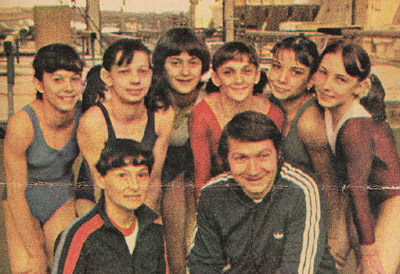

Marilena Vladarau (ROM)
1979 World Championships Team Gold Medalist

Marilena (far left) with her teammates and coaches in 1980.
Medal Total
World Championships: 1 Gold, 1 Silver
Marilena was born in Bucharest on August 16, 1963. At age nine, she was selected by the Triumf Sports Club and began training with coaches Cristina and Petru Ioan. After only one year she became a member of the school's Category IV gymnastics team, and a year after that she became the Category III national champion. During a competition she caught the eye of Bela Karolyi, who asked her to join the Onesti team which she did in July 1977.
Marilena became a world champion in the team event at the 1979 World Championships. She was a member of the 1980 Olympic team but apparently did not impress Karolyi during the team's training in Moscow. Cristina Grigoras was a last-minute addition to the line up and Marilena became the alternate. She competed at the 1981 Ennia Gold Cup in the Netherlands and was an alternate for the University Games team.
She married former gymnast Benone Pereteanu in 1984 and the two worked as coaches in Bucharest and later in Deva as part of the coaching group training the national team.
Competition Results
1977
Balkan Championships: 1st Team, 7th AA
Dinamo Berlin-Dinamo Bucharest Dual Meet: 1st Team, 1st AA, 1st UB, 1st B, 1st FX
Jr. BUL-ROM Dual Meet: 1st Team, 2nd AA
Jr. HUN-ROM Dual Meet: 1st Team, 2nd AA
Jr. USSR-ROM Dual Meet: 2nd Team, 6th AA
USA-ROM Dual Meet: 1st Team, 9th AA
1978
FRG-ROM Dual Meet: 1st Team, 4th AA
GBR-ROM Dual Meet: 1st Team, 6th AA
Jr. European Championships: 5th AA, 2nd UB, 2nd B, 8th V
Jr. Friendship Tournament (Druzhba): 3rd Team, 7th UB
Jr. ROM-BUL Dual Meet: 1st Team, 6th AA
World Championships: 2nd Team, 23rd AA (prelims)
1979
GBR-ROM Dual Meet: 1st Team, 6th AA
International Championships of Romania: 5th AA
NOR-ROM Dual Meet: 1st Team, 5th AA
World Championships: 1st Team, 19th AA (prelims)
1980
Coca-Cola International: 5th AA
International Championships of Romania: 6th AA
NED-ROM Dual Meet: 1st Team, 5th AA
1981
Ennia Gold Cup: 6th AA, 2nd UB, 3rd FX
This page was created on December
27, 2004 and was last updated on June 14, 2026.
© Gymn Forum